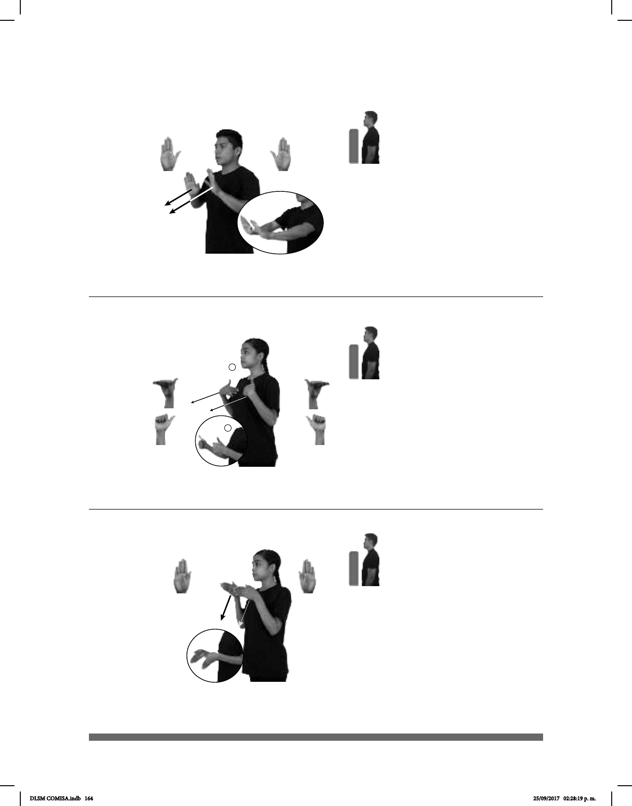

164
Seña: SS
Seña que pasa de
B-P.11 a A.1
Palmas hacia adentro.
Sobre el pecho.
Recto hacia enfrente
mientras los dedos se cierran contra la
palma.
Cabeza
ligeramente inclinada hacia el frente.
v. tr. Tener una idea clara
y precisa de algo. Saber o ser capaz de
reconocer el sentido de algo.
Seña: SS
B-P.6
Palmas hacia el centro.
Del pecho a la cintura.
Las manos se mueven
formando un arco hacia el frente y
hacia abajo.
Simula la acción de
colocar un ataúd en una fosa.
1. sust. m. Ceremonia en la
que se lleva a cabo la acción de poner
bajo tierra a un difunto. 2. v. tr. Enterrar
un cadáver, ponerlo en la sepultura, en
una cripta o en un nicho.
1
2
(B-P 161)
_________________o.i.g._
¿TODO pro-TÚ ENTENDER?
¿Entendiste todo?
(B-P 162)
1
2
SÁBADO PASADO pos-MI ABUELO SEPULTAR.
El sábado sepultaron a mi abuelo.
Seña: SS
B-P.2
Palmas hacia afuera.
A la altura del pecho.
Recto hacia enfrente.
Labios
redondeados.
v. tr. Hacer que algo o
alguien se mueva impulsándolo o
aventándolo hacia delante.
(B-P 160)
dm-MARÍA pos-SUYO HERMANO pro-ELLA EMPUJAR
María empujó a su hermano.
DLSM COMISA.indb 164 25/09/2017 02:28:19 p. m.